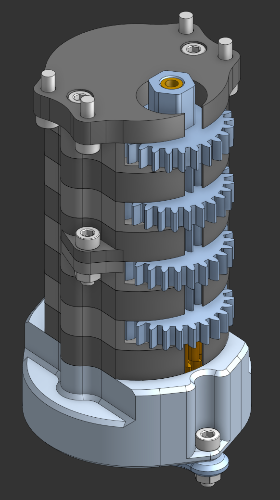
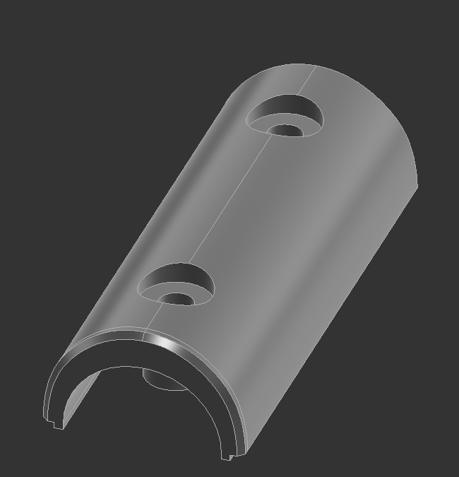

FRC 6615 Robotics Season CAD 2026
I was a very large contributor to this project. I created alot of this, and went through alot of complex geometry. This year, the CAD was before the robot, designed and thought out before the build process
Skills Used
- Design
- Innovation
- Problem Solving
- Manufacturing and CAM
- Teamwork and Collaboration
- Reinventing and Improving
- High-Precision Design

FRC 6615 Robotics Season CAD 2025
I was the only contributor to this project. The CAD was made post-robot, which meant I had to replicate from Real Life into CAD with precision
Skills Used
- High-Precision Recreation and Replication
- Manufacturing and CAM
- Design
- Small Scale Recreation

Fanuc Testing Board
Using complex geometry and replication skills, I produced a higher quality and structually strong model to work with FANUC robotics
Skills Used
- High-Precision Recreation and Replication
- Complex Geometric Abilities
- Design
- Assembling Large Parts

Planetary Gearbox
I have made many planetary gearboxes before. Using engineering filament and complex geometry, a small and low-cost solution was designed
Skills Used
- Use-Case Design
- Complex Geometric Abilities
- Small-Scale Assemblies
- Prioritizing 3D-Printing Capabilities

Granny Square Tool
This part was designed to be used as a tool to help knitting Granny Squares. I was told to make this, and very quickly designed and produced a function part.
Skills Used
- Use-Case Design
- Quick Part Turnaround
- Large Scale Design
- Prioritizing 3D-Printing Capabilities

Compound Gearbox
This is a very complex compound gearbox that I designed in part of my Jansen Walker passion project. It took many hours to design this from scratch, but it worked first-try. It converts a 3000rpm weak motor into a slow and torqe-full power source.
Skills Used
- Use-Case Design
- Large Scale Design
- Part Compatibility
- Prioritizing 3D-Printing Capabilities
- Complex Design and Geometric Capabilities

Pipe Wrap
This part was designed off a broken one, and is a very good example of part recreation. I accuratly designed this and printed it out of ABS for a customer.
Skills Used
- Use-Case Design
- High-Precision Recreation and Replication
- Part Compatibility
- Prioritizing 3D-Printing Capabilities
- Quick Part Turnaround
- Large-scale Manufacturing